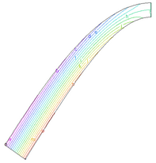

|
plot_on_grid |

  
|
|
plot_on_grid |
|
{ PLOT_ON_GRID.PDE
This is a variation of BENTBAR.PDE that makes use of the version 6.03 capability to plot contours on a deformed grid.
The syntax of the plot command is CONTOUR(data) ON GRID(Xposition,Yposition)
}
title "Contour plots on a deformed grid"
select cubic { Use Cubic Basis }
variables U { X-displacement } V { Y-displacement }
|
 |
definitions
L = 1 { Bar length }
hL = L/2
W = 0.1 { Bar thickness }
hW = W/2
eps = 0.01*L
I = 2*hW^3/3 { Moment of inertia }
nu = 0.3 { Poisson's Ratio }
E = 2.0e11 { Young's Modulus for Steel (N/M^2) }
{ plane stress coefficients }
G = E/(1-nu^2)
C11 = G
C12 = G*nu
C22 = G
C33 = G*(1-nu)/2
amplitude=GLOBALMAX(abs(v)) { for grid-plot scaling }
mag=1/amplitude
force = -250 { total loading force in Newtons (~10 pound force) }
dist = 0.5*force*(hW^2-y^2)/I { Distributed load }
Sx = (C11*dx(U) + C12*dy(V)) { Stresses }
Sy = (C12*dx(U) + C22*dy(V))
Txy = C33*(dy(U) + dx(V))
{ Timoshenko's analytic solution: }
Vexact = (force/(6*E*I))*((L-x)^2*(2*L+x) + 3*nu*x*y^2)
Uexact = (force/(6*E*I))*(3*y*(L^2-x^2) +(2+nu)*y^3 -6*(1+nu)*hW^2*y)
Sxexact = -force*x*y/I
Txyexact = -0.5*force*(hW^2-y^2)/I
initial values
U = 0
V = 0
equations { the displacement equations }
U: dx(Sx) + dy(Txy) = 0
V: dx(Txy) + dy(Sy) = 0
boundaries
region 1
start (0,-hW)
load(U)=0 { free boundary on bottom, no normal stress }
load(V)=0
line to (L,-hW)
value(U) = Uexact { clamp the right end }
mesh_spacing=hW/10
line to (L,0) point value(V) = 0
line to (L,hW)
load(U)=0 { free boundary on top, no normal stress }
load(V)=0
mesh_spacing=10
line to (0,hW)
load(U) = 0
load(V) = dist { apply distributed load to Y-displacement equation }
line to close
plots
grid(x+mag*U,y+mag*V) as "deformation" { show final deformed grid }
! STANDARD PLOTS:
contour(U)
surface(U)
! THE DEFORMED PLOTS:
contour(U) on grid(x+mag*U,y+mag*V)
surface(U) on grid(x+mag*U,y+mag*V)
end
Page url: index.html?plot_on_grid.html